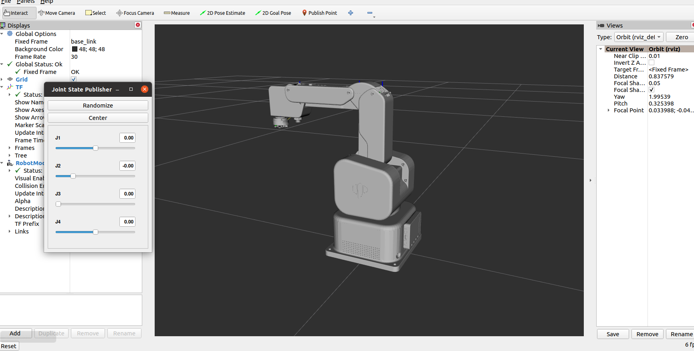
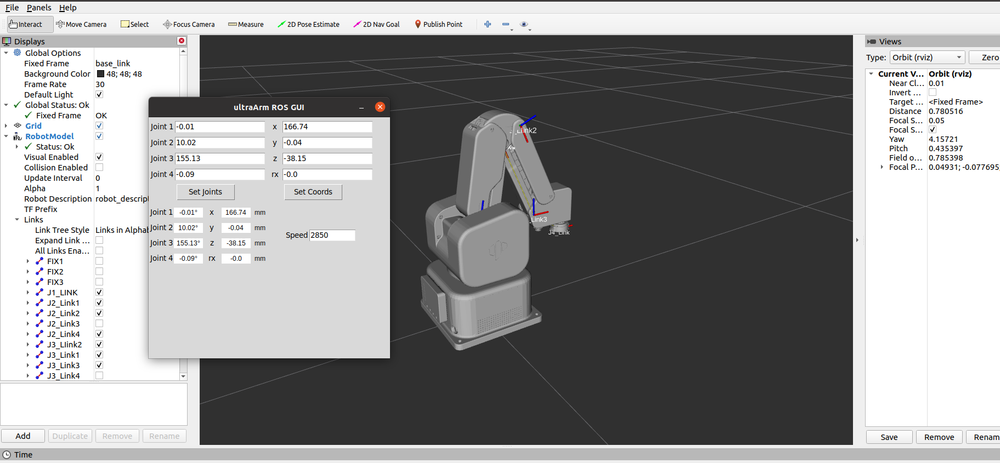
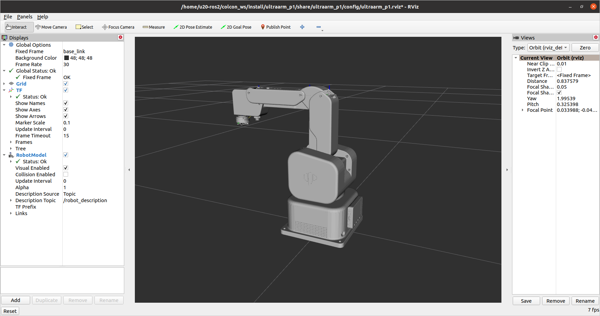

环境搭建
安装ROS2环境
参考 ROS2 环境搭建
mycobot_ros2安装
执行下面命令安装 ultraArm P1 ROS2 代码：
$ cd ~/colcon_ws/src
# For the humble branch
$ git clone -b p1-humble https://github.com/elephantrobotics/mycobot_ros2.git
# For the foxy branch
$ git clone -b p1 https://github.com/elephantrobotics/mycobot_ros2.git
$ cd ~/colcon_ws
$ colcon build
$ source ~/colcon_ws/install/setup.bash
$ sudo echo 'source ~/colcon_ws/install/setup.bash' >> ~/.bashrc
控制机械臂
注意：pymycobot 驱动库的版本必须大于4.0.4
使用前准备
在使用案例功能之前，请先确认以下硬件和环境准备齐全：
硬件设备
- ultraArm P1 机械臂
- 电源适配器
- USB Type-C串口线
软件与环境
- PC虚拟机 ubuntu 20.04系统
- 已安装 Python 3.6 及以上版本
- 已安装
pymycobot库（通过pip install pymycobot终端命令安装） 确保 ultraArm P1 已正确接通电源、串口线，并且虚拟机系统能检测到串口号。
验证：验证机械臂串口是否存在，终端输入：
ls /dev/tty*如果输出的串口信息有
/dev/ttyACM*或者/dev/ttyUSB*，表示串口已被检测到。串口权限： 如果串口存在，需要赋予可执行权限:
sudo chmod 777 /dev/ttyUSB* # 或者 sudo chmod 777 /dev/ttyACM*
1 滑块控制
打开命令行并运行：
# 默认串口名为"/dev/ttyUSB0"，波特率为1000000.
ros2 launch ultraarm_p1 slider_control.launch.py port:=/dev/ttyUSB0 baud:=1000000
它会打开 rviz2 和一个滑块组件，你会看到类似下面的内容：

然后，您可以在 rviz2 中通过拖动滑块来控制模型的移动。真实的 ultraArm 机器人也会随之移动。
请注意：由于在命令输入的同时机械臂会移动到模型目前的位置，在您使用命令之前请确保 rviz 中的模型没有出现穿模现象
不要在连接机械臂后做出快速拖动滑块的行为，防止机械臂损坏
2 模型跟随
除了上面的控制，我们也可以让模型跟随真实的机械臂运动。
打开一个命令行运行：
# 默认串口名为"/dev/ttyUSB0"，波特率为1000000.
ros2 launch ultraarm_p1 mycobot_follow.launch.py port:=/dev/ttyUSB0 baud:=1000000
运行成功后，需要按住机器末端LED按钮才能拖拽关节移动，终端输出信息如下：
[INFO] [launch]: All log files can be found below /home/u20-ros2/.ros/log/2026-06-23-11-25-43-317882-u20ros2-VirtualBox-66930
[INFO] [launch]: Default logging verbosity is set to INFO
[INFO] [robot_state_publisher-1]: process started with pid [66933]
[INFO] [follow_display-2]: process started with pid [66935]
[INFO] [rviz2-3]: process started with pid [66937]
[robot_state_publisher-1] Parsing robot urdf xml string.
[robot_state_publisher-1] Link base_link had 1 children
[robot_state_publisher-1] Link J1_LINK had 2 children
[robot_state_publisher-1] Link J2_Link1 had 1 children
[robot_state_publisher-1] Link J2_Link4 had 3 children
[robot_state_publisher-1] Link FIX1 had 0 children
[robot_state_publisher-1] Link FIX3 had 1 children
[robot_state_publisher-1] Link J3_LIink2 had 1 children
[robot_state_publisher-1] Link J3_Link4 had 0 children
[robot_state_publisher-1] Link J3_Link1 had 1 children
[robot_state_publisher-1] Link J3_Link3 had 2 children
[robot_state_publisher-1] Link FIX2 had 0 children
[robot_state_publisher-1] Link J4_Link had 0 children
[robot_state_publisher-1] Link J2_Link2 had 1 children
[robot_state_publisher-1] Link J2_Link3 had 0 children
[robot_state_publisher-1] [INFO] [1782185143.625335126] [robot_state_publisher]: got segment FIX1
[robot_state_publisher-1] [INFO] [1782185143.626202936] [robot_state_publisher]: got segment FIX2
[robot_state_publisher-1] [INFO] [1782185143.626241164] [robot_state_publisher]: got segment FIX3
[robot_state_publisher-1] [INFO] [1782185143.626253165] [robot_state_publisher]: got segment J1_LINK
[robot_state_publisher-1] [INFO] [1782185143.626264141] [robot_state_publisher]: got segment J2_Link1
[robot_state_publisher-1] [INFO] [1782185143.626274697] [robot_state_publisher]: got segment J2_Link2
[robot_state_publisher-1] [INFO] [1782185143.626284720] [robot_state_publisher]: got segment J2_Link3
[robot_state_publisher-1] [INFO] [1782185143.626295035] [robot_state_publisher]: got segment J2_Link4
[robot_state_publisher-1] [INFO] [1782185143.626305480] [robot_state_publisher]: got segment J3_LIink2
[robot_state_publisher-1] [INFO] [1782185143.626316226] [robot_state_publisher]: got segment J3_Link1
[robot_state_publisher-1] [INFO] [1782185143.626326972] [robot_state_publisher]: got segment J3_Link3
[robot_state_publisher-1] [INFO] [1782185143.626337387] [robot_state_publisher]: got segment J3_Link4
[robot_state_publisher-1] [INFO] [1782185143.626347371] [robot_state_publisher]: got segment J4_Link
[robot_state_publisher-1] [INFO] [1782185143.626357635] [robot_state_publisher]: got segment base_link
[robot_state_publisher-1] [INFO] [1782185143.626367669] [robot_state_publisher]: got segment world
[rviz2-3] [INFO] [1782185144.256258636] [rviz2]: Stereo is NOT SUPPORTED
[rviz2-3] [INFO] [1782185144.257317648] [rviz2]: OpenGl version: 3.1 (GLSL 1.4)
[rviz2-3] [INFO] [1782185144.373166398] [rviz2]: Stereo is NOT SUPPORTED
[rviz2-3] Parsing robot urdf xml string.
[follow_display-2] [INFO] [1782185145.077858147] [follow_display]: port:/dev/ttyUSB0, baud:1000000
[follow_display-2] [INFO] [1782185145.669663514] [follow_display]: Please press the LED button at the end of the machine to drag the joint.
[follow_display-2] 请按下机器末端LED按钮进行关节拖拽运动
[follow_display-2]
[follow_display-2] [INFO] [1782185145.737143104] [follow_display]: Publishing ...
它将打开 rviz 以显示模型跟随效果 。此时拖动真实机械臂关节，仿真模型将会跟随真实机械臂运动。

3 GUI 控制
在前者的基础上，本软件包还提供了一个简单的图形用户界面控制接口。这种方法意味着真正的机械臂是相互连接的，请连接到 ultraArm。
打开命令行：
# 默认串口名为"/dev/ttyUSB0"，波特率为115200.
ros2 launch ultraarm_p1 simple_gui.launch.py port:=/dev/ttyUSB0 baud:=115200

运行成功后，终端信息输出如下：
[INFO] [launch]: Default logging verbosity is set to INFO
[INFO] [robot_state_publisher-1]: process started with pid [23417]
[INFO] [listen_real_service-2]: process started with pid [23419]
[INFO] [simple_gui-3]: process started with pid [23421]
[INFO] [rviz2-4]: process started with pid [23423]
[robot_state_publisher-1] Parsing robot urdf xml string.
[robot_state_publisher-1] Link base_link had 1 children
[robot_state_publisher-1] Link J1_LINK had 2 children
[robot_state_publisher-1] Link J2_Link1 had 1 children
[robot_state_publisher-1] Link J2_Link4 had 3 children
[robot_state_publisher-1] Link FIX1 had 0 children
[robot_state_publisher-1] Link FIX3 had 1 children
[robot_state_publisher-1] Link J3_LIink2 had 1 children
[robot_state_publisher-1] Link J3_Link4 had 0 children
[robot_state_publisher-1] Link J3_Link1 had 1 children
[robot_state_publisher-1] Link J3_Link3 had 2 children
[robot_state_publisher-1] Link FIX2 had 0 children
[robot_state_publisher-1] Link J4_Link had 0 children
[robot_state_publisher-1] Link J2_Link2 had 1 children
[robot_state_publisher-1] Link J2_Link3 had 0 children
[robot_state_publisher-1] [INFO] [1764754690.688488026] [robot_state_publisher]: got segment FIX1
[robot_state_publisher-1] [INFO] [1764754690.692047048] [robot_state_publisher]: got segment FIX2
[robot_state_publisher-1] [INFO] [1764754690.692120163] [robot_state_publisher]: got segment FIX3
[robot_state_publisher-1] [INFO] [1764754690.692146702] [robot_state_publisher]: got segment J1_LINK
[robot_state_publisher-1] [INFO] [1764754690.692163713] [robot_state_publisher]: got segment J2_Link1
[robot_state_publisher-1] [INFO] [1764754690.692178420] [robot_state_publisher]: got segment J2_Link2
[robot_state_publisher-1] [INFO] [1764754690.692192827] [robot_state_publisher]: got segment J2_Link3
[robot_state_publisher-1] [INFO] [1764754690.692207404] [robot_state_publisher]: got segment J2_Link4
[robot_state_publisher-1] [INFO] [1764754690.692222431] [robot_state_publisher]: got segment J3_LIink2
[robot_state_publisher-1] [INFO] [1764754690.692237529] [robot_state_publisher]: got segment J3_Link1
[robot_state_publisher-1] [INFO] [1764754690.692255362] [robot_state_publisher]: got segment J3_Link3
[robot_state_publisher-1] [INFO] [1764754690.692276822] [robot_state_publisher]: got segment J3_Link4
[robot_state_publisher-1] [INFO] [1764754690.692296618] [robot_state_publisher]: got segment J4_Link
[robot_state_publisher-1] [INFO] [1764754690.692311626] [robot_state_publisher]: got segment base_link
[robot_state_publisher-1] [INFO] [1764754690.692326063] [robot_state_publisher]: got segment world
[rviz2-4] [INFO] [1764754692.337228590] [rviz2]: Stereo is NOT SUPPORTED
[rviz2-4] [INFO] [1764754692.337892341] [rviz2]: OpenGl version: 3.1 (GLSL 1.4)
[rviz2-4] [INFO] [1764754692.677950762] [rviz2]: Stereo is NOT SUPPORTED
[listen_real_service-2] [INFO] [1764754693.745880907] [listen_real_service]: port:/dev/ttyUSB0, baud:1000000
[rviz2-4] Parsing robot urdf xml string.
然后在GUI界面输入相关角度和坐标信息，点击对应按钮，即可实现真实机器与仿真模型的同步运动
4 键盘控制
在 ultraarm_p1 包中添加了键盘控制功能，并在 rviz2 中实时同步。 该功能依赖于 python Api，因此请确保与真正的机械臂连接。
打开命令行并运行：
# 默认串口名为"/dev/ttyUSB0"，波特率为1000000.
ros2 launch ultraarm_p1 teleop_keyboard.launch.py port:=/dev/ttyUSB0 baud:=1000000
运行效果如下：

命令行中将会输出 ultraArm 信息，如下：
[INFO] [launch]: Default logging verbosity is set to INFO
[INFO] [robot_state_publisher-1]: process started with pid [26338]
[INFO] [listen_real_service-2]: process started with pid [26340]
[INFO] [rviz2-3]: process started with pid [26342]
[robot_state_publisher-1] Parsing robot urdf xml string.
[robot_state_publisher-1] Link base_link had 1 children
[robot_state_publisher-1] Link J1_LINK had 2 children
[robot_state_publisher-1] Link J2_Link1 had 1 children
[robot_state_publisher-1] Link J2_Link4 had 3 children
[robot_state_publisher-1] Link FIX1 had 0 children
[robot_state_publisher-1] Link FIX3 had 1 children
[robot_state_publisher-1] Link J3_LIink2 had 1 children
[robot_state_publisher-1] Link J3_Link4 had 0 children
[robot_state_publisher-1] Link J3_Link1 had 1 children
[robot_state_publisher-1] Link J3_Link3 had 2 children
[robot_state_publisher-1] Link FIX2 had 0 children
[robot_state_publisher-1] Link J4_Link had 0 children
[robot_state_publisher-1] Link J2_Link2 had 1 children
[robot_state_publisher-1] Link J2_Link3 had 0 children
[robot_state_publisher-1] [INFO] [1764756153.570946274] [robot_state_publisher]: got segment FIX1
[robot_state_publisher-1] [INFO] [1764756153.571195782] [robot_state_publisher]: got segment FIX2
[robot_state_publisher-1] [INFO] [1764756153.571221292] [robot_state_publisher]: got segment FIX3
[robot_state_publisher-1] [INFO] [1764756153.571237033] [robot_state_publisher]: got segment J1_LINK
[robot_state_publisher-1] [INFO] [1764756153.571251792] [robot_state_publisher]: got segment J2_Link1
[robot_state_publisher-1] [INFO] [1764756153.571266390] [robot_state_publisher]: got segment J2_Link2
[robot_state_publisher-1] [INFO] [1764756153.571280949] [robot_state_publisher]: got segment J2_Link3
[robot_state_publisher-1] [INFO] [1764756153.571295597] [robot_state_publisher]: got segment J2_Link4
[robot_state_publisher-1] [INFO] [1764756153.571310066] [robot_state_publisher]: got segment J3_LIink2
[robot_state_publisher-1] [INFO] [1764756153.571324303] [robot_state_publisher]: got segment J3_Link1
[robot_state_publisher-1] [INFO] [1764756153.571338611] [robot_state_publisher]: got segment J3_Link3
[robot_state_publisher-1] [INFO] [1764756153.571353450] [robot_state_publisher]: got segment J3_Link4
[robot_state_publisher-1] [INFO] [1764756153.571367488] [robot_state_publisher]: got segment J4_Link
[robot_state_publisher-1] [INFO] [1764756153.571382958] [robot_state_publisher]: got segment base_link
[robot_state_publisher-1] [INFO] [1764756153.571403939] [robot_state_publisher]: got segment world
[rviz2-3] [INFO] [1764756154.449688149] [rviz2]: Stereo is NOT SUPPORTED
[rviz2-3] [INFO] [1764756154.451433555] [rviz2]: OpenGl version: 3.1 (GLSL 1.4)
[rviz2-3] [INFO] [1764756154.611921792] [rviz2]: Stereo is NOT SUPPORTED
[listen_real_service-2] [INFO] [1764756155.102106356] [listen_real_service]: port:/dev/ttyUSB0, baud:1000000
[rviz2-3] Parsing robot urdf xml string.
接下来，打开另一个 命令行：
ros2 run ultraarm_p1 teleop_keyboard
您将在终端看到以下输出：
ultraArm P1 Teleop Keyboard Controller
---------------------------
Movimg options(control coordinations [x,y,z,rx]):
w(x+)
a(y-) s(x-) d(y+)
z(z-) x(z+)
u(rx+) j(rx-)
+/- : Increase/decrease movement step size
Other:
1 - Go to init pose
2 - Go to home pose
3 - Resave home pose
q - Quit
currently:speed: 50 change percent: 5
在该终端中，您可以通过命令行中的按键控制机械臂的状态并移动机械臂。
注意：先输入2机械臂回到起始点之后，再进行其他坐标控制操作，终端会有如下提示：
[WARN] [1758001794.385321]: Coordinate control disabled. Please press '2' first.
[INFO] [1758001804.552778]: Home pose reached. Coordinate control enabled.
[INFO] [1758001817.069637]: Home pose reached. Coordinate control enabled.
[WARN] [1758001836.301070]: Returned to zero. Press '2' to enable coordinate control.
[WARN] [1758001848.830702]: Coordinate control disabled. Please press '2' first.
[INFO] [1758001863.383565]: Home pose reached. Coordinate control enabled.
[WARN] [1758001933.596504]: Returned to zero. Press '2' to enable coordinate control.
[WARN] [1758001942.051899]: Coordinate control disabled. Please press '2' first.